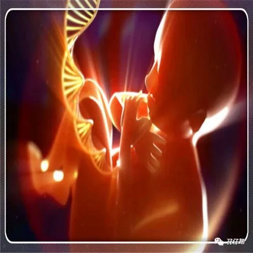
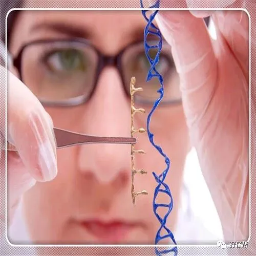
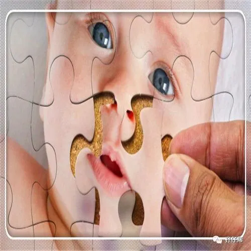
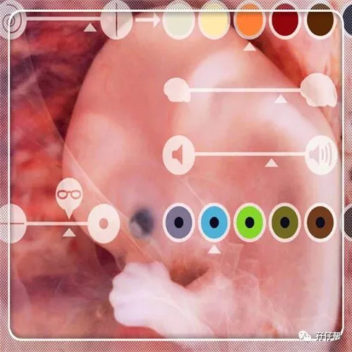
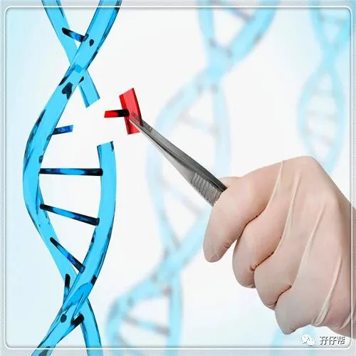
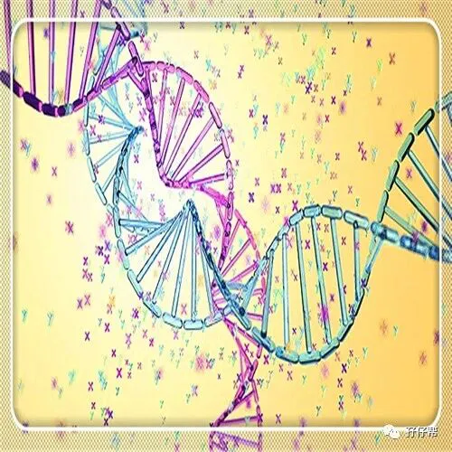
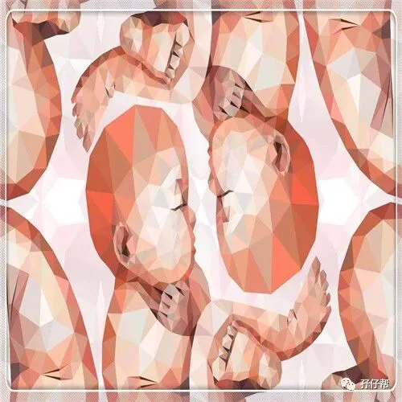
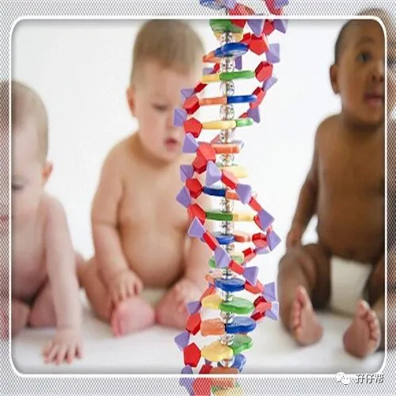

点击上方蓝字 ，与您分享双胞胎育儿经！
文|圆圈妈，一个文思如尿崩的双胎妈妈
1
从昨晚到现在，几乎所有主流媒体平台都被这个新名词“基因编辑婴儿”刷屏了！而事情的起因是以下这则新闻：
南方科技大学的生物学家贺建奎在2018年11月26日宣布，一对名为露露和娜娜的基因编辑婴儿于11月在中国健康诞生。这对双胞胎的一个基因经过修改，使她们出生后即能天然抵抗艾滋病。这也是世界首例免疫艾滋病的基因编辑婴儿。
这一消息迅速引发中外舆论聚焦，各种声音层出不穷，目前还在持续发酵中。
我刚开始看到新闻时，纯粹是妇人之见，不经大脑地惊喜了下。
哇塞，太好了，中国科学家威武，又实现了0突破，以后的小婴儿都能百分百保证健康出生，可能会造福于千千万万户深受遗传病困扰的家庭。
可是随着事件的不断升级热议，不断有很多质疑谴责的声音冒出来….
我一个吃瓜群众再也不敢妄加评论了，那些在我眼里非常高深莫测的生命科学和基因编辑研究离我太遥远了，我没有底气去评价这个技术的对与错，甚至表达下支持or反对的资格都没有。
2
今天只想站在一位母亲的立场，聊聊我对基因编辑婴儿的看法。
孩子是否健康很大程度决定着这个家庭是不是幸福美满，须知道，孩子生病，全家遭殃。
有孩子的家庭都有这种切身体会，无一例外，都希望孩子平安健康一生。
与大家一样，对于孩子生病这事，我总是无法泰然处之。哪怕面对的只是小小的感冒发烧，看见孩子生病受苦受罪，倍感焦虑，心都碎了。
我家是一对双胞胎男宝，他们两个发挥着双胞胎得天独厚的“优势”---同时生病。一人生病就够折腾了，两人一起生病，莫过于被暴打一顿还要在伤口上撒一撮盐巴！
每当圆圈兄弟集体生病的时候，就特别渴望要是有个一劳永逸的办法让他们这辈子不生病该多好。
因此，当了解到原来这个基因编辑婴儿的技术早就存在时，我是欣喜若狂的。
在他们还在胚胎时期就把他们的基因设计好，取其精华，去其糟粕，让他们从胎儿期就命中注定是个无所不能敌的强者。
我希望圆圈在出生之前就把所有疫苗都完成了，这样我再也不用奔赴战场似的拖着泪眼汪汪的他们去打预防针，甚至不用遭受毒疫苗带来的系列恐慌…
我希望圆圈出生后能百毒不侵，世界上所有病毒和细菌都奈何不了他们, 这样我和圆圈爸就可以翘起二郎腿，高枕无忧…
我希望圆圈一出生就像哪吒一样瞬间长大成人，最好是年满十八岁，可以自力更生，这样我就可以随时云游四海，走遍天下无敌手…
如果可以，我甚至希望圆圈的眼睛不要像我，又短又小….我还希望….
且慢！
按我这样浮想联翩下去，我怎么感觉我在画一个脑洞大开的人物画像。
这个按照我希望的设计好的宝宝还是我的亲骨肉吗？这样的孩子出生后，我真的可以光明正大地对别人说那是我的孩子吗？
3
好吧，一切又回到了原点。
我想起古人一句话“故天将降大任于是人也，必先苦其心志，劳其筋骨，饿其体肤，空伐其身行，行弗乱其所为，所以动心忍性，曾益其所不能….”
不能说，没有经过“苦心志”“劳筋骨”“饿体肤”“空乏身”就不能担当大任，但不得不否认，经历过日晒雨淋，严寒酷暑的大树更能抵抗住更强劲的台风。
假设一个设计好的百毒不侵的宝宝出生了，看似完美极了，但请不要忘记，物极必反。
有时候优势太多也未必是件好事，甚至可能成为痛点。
人世间充满太多未知数了，若这种基因编辑技术不够完善，不能全面覆盖到所有病毒，那又会是怎样的局面呢？
也许他对这个病毒有免疫，但是面对新病毒呢？却手无缚鸡之力，招架不住，还没反攻就被秒杀了。
即便他真能抵抗所有病毒，那他自身也必定存在其他方面的缺陷，这又如何去弥补呢？倘若修改了这个基因，却引发另一个可怕基因的诞生，这又将何去何从呢？
三年的育儿路上，我非常坚信一个很浅显的育儿常识：孩子适当发烧是件好事情。
外界病毒细菌的适当刺激会激活孩子身体的免疫系统，从而让孩子产生抵御这种病菌的能力，使自身免役力得到煅练并逐步地完善，从而建立强大的免疫系统。
同理，若孩子从小无可避免地面对病毒细菌，并与他们单打独斗，他们也在这一场博弈中不断丰富自己的羽翼，并训练有素，拥有一身强壮的体格，为战胜未来可能出现更凶猛的病毒细菌打好坚实的基础。
而那些完美设计好的宝宝就好像温室里的小花，不经风雨，靠天然的那点百毒不侵的基因优势，怕是不能完全hold住人世间随时都会瞬息万变的大时代。
难道还需要重新塞回肚子里面去，然后对世人说：“不好意思，需要升级下！”
4
回到基因编辑婴儿的话题。
据说那是一对双胞胎宝宝，名字叫露露和娜娜，非常好听的名字，虽然还没见到照片，应该是一对非常可爱的姐妹花。
她们的与众不同除了是对双胞胎还在于她们的某些基因被稍微修饰了下，以至于可能终生不会得艾滋病。
我很担忧这一对双胞胎以后的命运，她们可以顺利长大成人吗？她们真的对HIV 终生免疫吗？成人后的她们知道原来她们是科学界的试验品，会有何感想？会不会像电影里描述的那样，被某些有心之人抢走做其他用途？会不会….
OK，这不是头发长见识短的我可以想象的，也希望是我自己多虑了。
我看着熟睡的圆圈兄弟，感恩！知足！
他们刚出生确实遭罪不少，出生不到40天内就与死神两次擦肩而过，1岁前体质很差，老生病，经常跑医院报到…
很庆幸的是，他们现在是个健康的小男子汉，有时候我不得不感谢下那些病毒细菌，虽然它们的到来让我们肝肠寸断，但又却确确实实磨炼了圆圈的身体素质。
正如那些经典鸡汤文说的那样：感谢遇到强敌，让我变得更强。
看了好多关于基因编辑婴儿的文章，更多潜在信息浮出水面….
我想说，如果再给我选择，我还是希望他们无删减，零添加，纯天然地来到我们身边，做我们真正意义上的儿子。
我不需要他们天生优秀，高人一等，只希望他们活在平等的世界里通过自己努力，找到属于自己的价值。
他们才3岁半，以后的路还很长，会发生很多意想不到的大事小事，好事坏事….
他们没有先天的优秀基因，也许会过得很狼狈，甚至败下阵，但人之所以为人，就是有一种可以创造奇迹的潜能，越挫越勇的他们也许能撬动整个地球。
万事皆有可能，不是吗？
当然，去撬地球就不必了，他们能冲破成长中的所有坎坷障碍，顺利长大成人，结婚生子，繁衍后代，生生不息就差不多了。
当妈之后从来没有像现在这样希望世界和平，被人感觉是句空话，但确是我的真心话。
希望这个与我很遥远，但却能影响整个人类社会的基因编辑技术得到妥善的对待，让我们这些无知的妈妈们继续在世界是和平美好的憧憬中快乐育儿。
不知道在我的有生之年还会发生什么惊天动地的事情，我只愿活在当下，守护圆圈长大成人，在人世间刷点存在感就差不多了吧！
题外话：
孖仔帮有双胞胎爸爸群啦！
在此你们可以互相交流下初为人父的喜悦和已为人父的辛酸，还有你们男人间的家长里短…尽情唠嗑吧！
入群方式：＋圆圈妈的微信(sgguy-com)，我会发群聊邀请给你们。欢迎准爸爸的加入双胞胎育儿大家庭，一起分享双胞胎育儿经。
#重磅互动#
评论区聊一聊
你希望圆圈妈写什么干货？
随便提，万一下篇就写了呢？
END
本文系圆圈妈sgguy-com原创，来源于孖仔帮，专注双胞胎孕期育儿经验分享，著作权归孖仔帮所有。
212:原来双胎妈妈可以这样数胎动，好简单啊
215:双胎子宫日记系列|（下）你看不看？双胞胎妈妈直播剖腹产全过程
302:喂养干货||如何训练双胞胎宝宝睡整夜觉
306: 真人示范！双胞胎妈妈高难度喂母乳技巧
219双胞胎准爸爸的生存指南：不做猪一样的队友，活着出来喜当爹
220双胞胎准妈妈，其实你的产检方式一直搞错了…
222:看过这份最简单的双胞胎宝宝用品囤货清单，其他的都是将就
712：双十一囤货：我为什么不买并排式的双胞胎婴儿车，这篇文章有答案
304:家有双胞胎宝宝，这6个小贴士越早知道越好
305:双胞胎宝宝怎么睡？这样做既省钱又安全
303:干货||配方奶喂养的双胞胎宝宝囤货用品清单
309: 如何顺利度过双胞胎宝宝的第一年
710:双胎妈妈囤货建议||这6个育儿神器，吃土也要买
我猜你肯定喜欢看上面的文章，对不对嘛？关注孖仔帮，回复文章前面的数字编号即可阅读。
关于这个号
谢谢关注！我是圆圈妈
85后，全职双胎妈妈
家有孖仔男宝两枚，圆圈&圈圈
双胞胎育儿公众号：孖仔帮
旨意分享双胞胎育儿经验帮助双胞胎家庭
有经验可循
有组织可靠
希望我的经验对您有所启发
期待与您一起共享双胞胎育儿经
孖仔帮目前有4个微信社群
孕期群，喂养群，闲置群，双胞胎爸爸专属群，
如需入交流群，请+圆圈妈的微信号sgguy-com,或扫描下方二维码
由圆圈妈邀请入群
更多孖仔帮双胞胎原创育儿文章请猛戳 "阅读原文" 或者直接上圆圈妈的个人博客。
博客链接：https://www.sgguy.com/twinsbang
阅读原文








